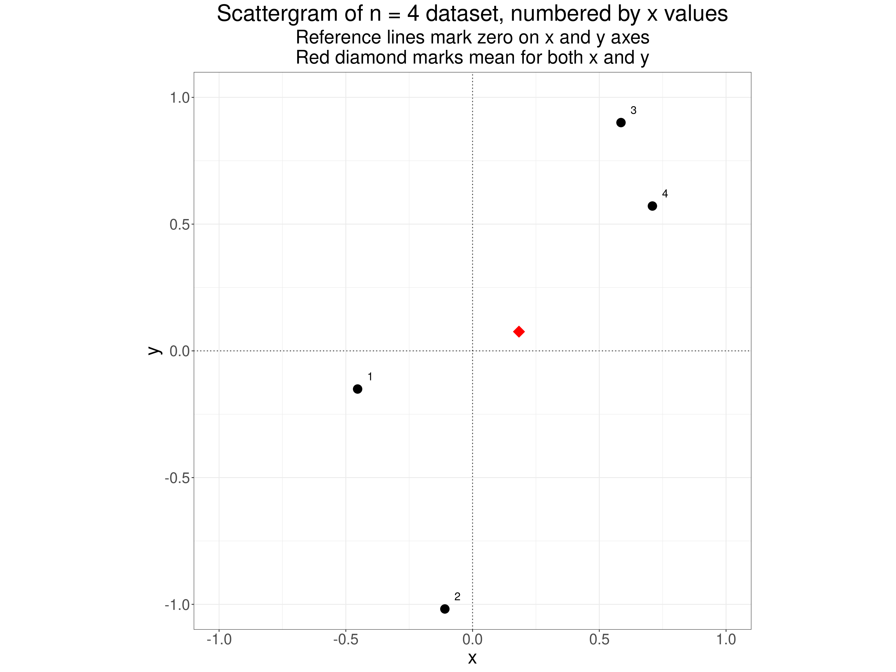
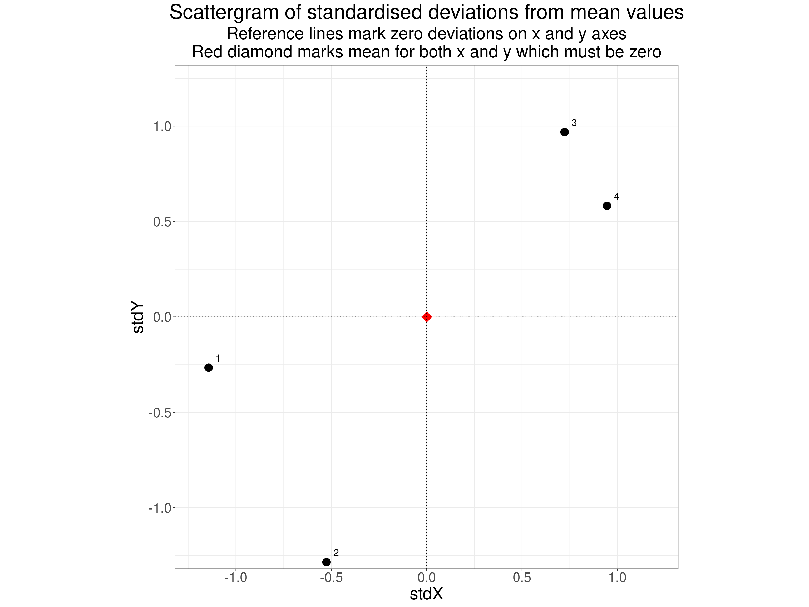
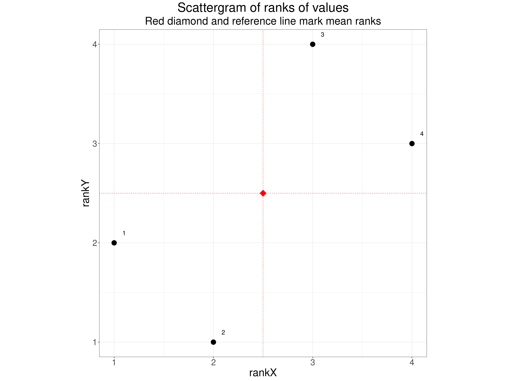
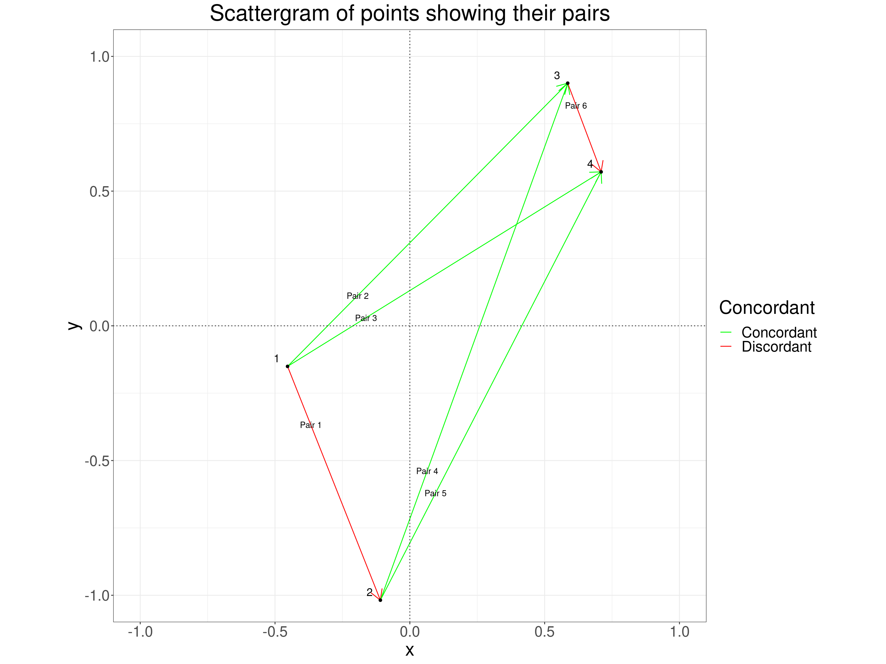
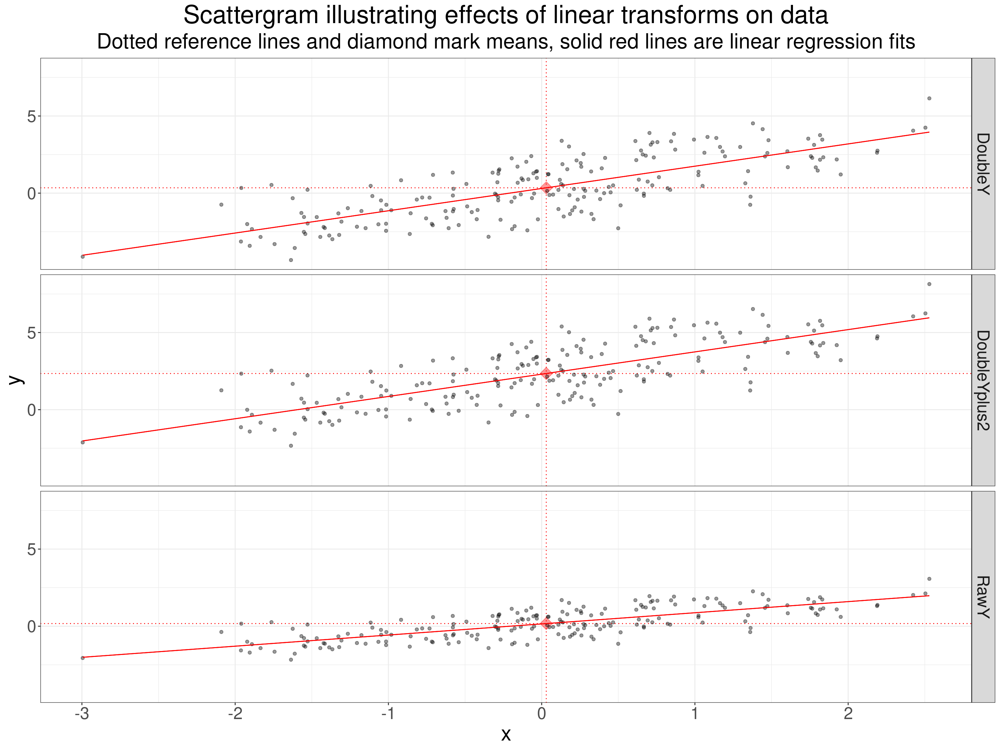
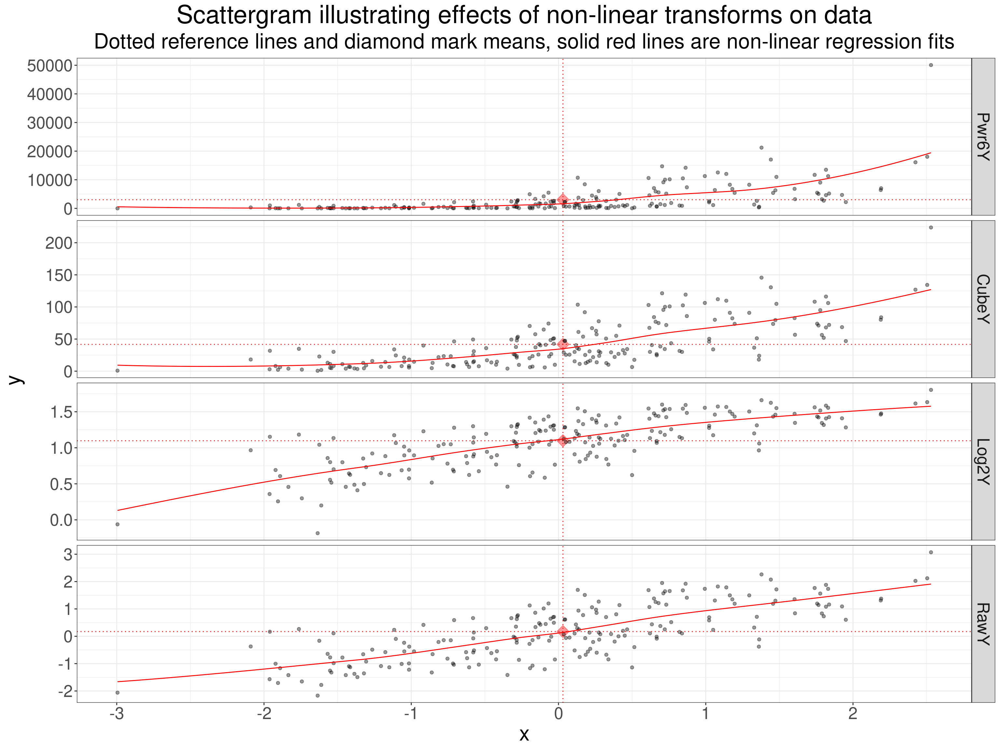
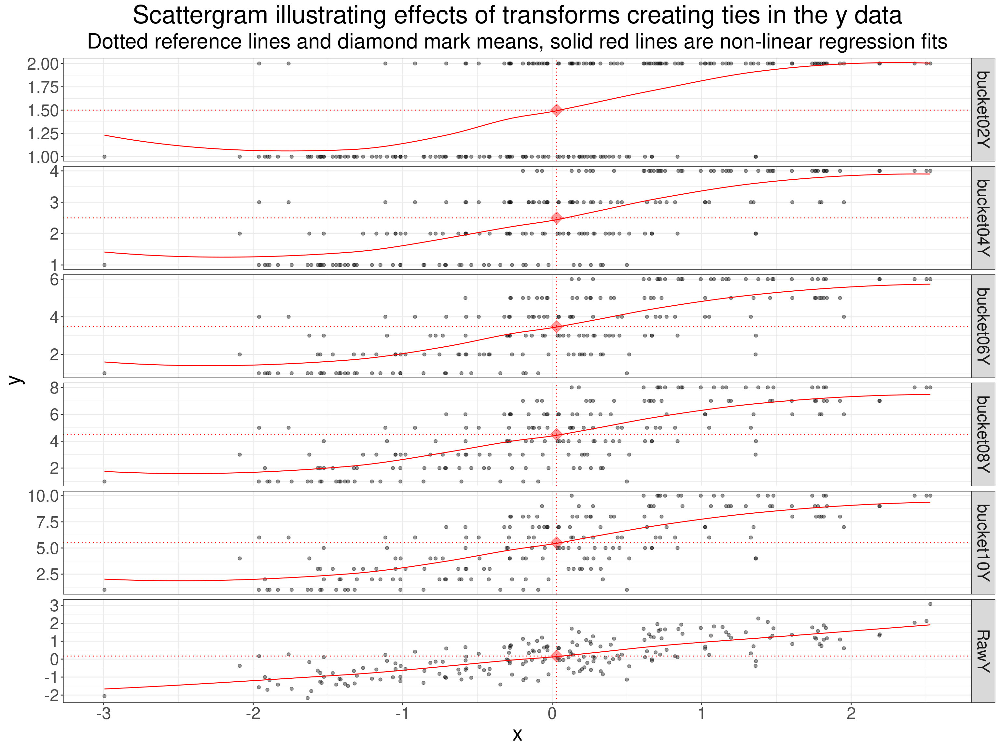

Show code
### this is just the code that creates the "copy to clipboard" function in the code blocks
htmltools::tagList(
xaringanExtra::use_clipboard(
button_text = "<i class=\"fa fa-clone fa-2x\" style=\"color: #301e64\"></i>",
success_text = "<i class=\"fa fa-check fa-2x\" style=\"color: #90BE6D\"></i>",
error_text = "<i class=\"fa fa-times fa-2x\" style=\"color: #F94144\"></i>"
),
rmarkdown::html_dependency_font_awesome()
)At various times in my research career I think I have made use of the Pearson correlation coefficient (often), Spearman ditto (often), Kendall tau b (rarely) and I don’t think I have ever used Kendall’s tau c but I knew it existed but I don’t think I’d ever been able to explain when it was best to use it or why. I don’t think I knew that Kendall’s tau a existed. This is an attempt to get the differences sorted out. However, I am also going to look at:
- the basics of what these coefficients are doing
- how this relates to issues of “scaling” and to Steven’s hierarchy of scaling properties
- hence the distinction between rank order correlations and Pearson’s correlation coefficient
- comparing values across the different coefficients
- effects of transformations of the data on the coefficients
Those issues form the bases for the following further issues:
- issues about “testing” a correlation, technically, testing whether a correlation as strong as, or stronger than, the one seen in the dataset might by unlikely to have arisen in chance sampling of that dataset from a null population model, i.e. p values and the NHST (Null Hypothesis Significance Test) of an observed correlation
- how this relates to distributions: in the dataset and in any postulated population from which the dataset came
- touching a bit on estimation: the precision with which a correlation from give dataset might estimate a (not necessarily null) population correlation, i.e. finding a confidence interval around an observed correlation value.
I picked up those in a separate post: correlations (2) as this was getting long enough already!
What correlation coefficients are doing
So why are we computing correlations? Or more technically “why are we computing correlation coefficients?”
This seems obvious: we want to know whether the values of one variable in a dataset seem to be systematically related to the values of another variable. This is going to take us to scaling!
The scaling of our variables
If we want to know whether the values of one variable in a dataset seem to be systematically related to the values of another variable we are clearly into questions of scalin and the classic story about scaling, at least in the psychological realm, is Steven’s levels of measurement, keeping things in the house, I hope this entry in the glossary for Jo-anne’s and my OMbook.
Different correlation coefficients depend on different assumptions about the scaling we can believe applicable to our data. Let’s start with the paradigmatic correlation coefficient: Pearson’s coefficient.
Pearson’s correlation coefficient
Let’s start with an example with a tiny dataset to make it easy to show how the various correlation coefficients are calculated.
Show code
set.seed(12345)
totN <- 4
tibble(x = rnorm(totN)) %>%
arrange(x) %>%
mutate(ID = as.character(row_number()),
y = x + rnorm(totN, sd = .5),
meanX = mean(x),
meanY = mean(y),
sdX = sd(x),
sdY = sd(y),
devX = x - meanX,
devY = y - meanY,
stdX = devX / sdX,
stdY = devY / sdY) %>%
select(ID, everything()) -> tibDat1N4
tibDat1N4 %>%
select(ID, x, y) %>%
flextable() %>%
colformat_double(digits = 2)ID | x | y |
|---|---|---|
1 | -0.45 | -0.15 |
2 | -0.11 | -1.02 |
3 | 0.59 | 0.90 |
4 | 0.71 | 0.57 |
Show code
valPearson1N4 <- cor(tibDat1N4$x, tibDat1N4$y)That tiny n = 4 dataset has a Pearson correlation coefficient of 0.74
A scattergram of the data looks like this.
Show code
ggplot(data = tibDat1N4,
aes(x = x, y = y)) +
geom_point(size = 5) +
geom_point(aes(x = meanX, y = meanY),
shape = 23,
size = 5,
colour = "red",
fill = "red") +
geom_text(aes(label = ID),
nudge_x = .05,
nudge_y = .05,
size = 5) +
geom_hline(yintercept = 0,
linetype = 3) +
geom_vline(xintercept = 0,
linetype = 3) +
coord_cartesian(xlim = c(-1, 1),
ylim = c(-1, 1)) +
ggtitle(paste0("Scattergram of n = ",
totN,
" dataset, numbered by x values"),
subtitle = paste0("Reference lines mark zero on x and y axes",
"\nRed diamond marks mean for both x and y")) +
theme(aspect.ratio = 1)
We get to the Pearson correlation coefficient in effect by standardising each of the variables, i.e. replacing the scores by their deviation from their mean score and then dividing those deviations by the standard deviation of each variable. For our little dataset that gives us this.
Show code
tibDat1N4 %>%
flextable() %>%
colformat_double(digits = 2)ID | x | y | meanX | meanY | sdX | sdY | devX | devY | stdX | stdY |
|---|---|---|---|---|---|---|---|---|---|---|
1 | -0.45 | -0.15 | 0.18 | 0.08 | 0.56 | 0.85 | -0.64 | -0.23 | -1.14 | -0.27 |
2 | -0.11 | -1.02 | 0.18 | 0.08 | 0.56 | 0.85 | -0.29 | -1.09 | -0.53 | -1.29 |
3 | 0.59 | 0.90 | 0.18 | 0.08 | 0.56 | 0.85 | 0.40 | 0.82 | 0.72 | 0.97 |
4 | 0.71 | 0.57 | 0.18 | 0.08 | 0.56 | 0.85 | 0.53 | 0.50 | 0.95 | 0.58 |
That shows the mean values for each variable, the deviations of the scores from those means (for each variable) and then the standardised deviations. If we now plot these standardised values we get this.
Show code
ggplot(data = tibDat1N4,
aes(x = stdX, y = stdY)) +
geom_point(size = 5) +
geom_point(x = 0, y = 0,
shape = 23,
size = 5,
colour = "red",
fill = "red") +
geom_text(aes(label = ID),
nudge_x = .05,
nudge_y = .05,
size = 5) +
geom_hline(yintercept = 0,
linetype = 3) +
geom_vline(xintercept = 0,
linetype = 3) +
coord_cartesian(xlim = c(-1.2, 1.2),
ylim = c(-1.2, 1.2)) +
ggtitle("Scattergram of standardised deviations from mean values",
subtitle = paste0("Reference lines mark zero deviations on x and y axes",
"\nRed diamond marks mean for both x and y which must be zero")) +
theme(aspect.ratio = 1)
One relatively simple way to understand the calculation of the Pearson correlation coefficient is that it starts with the sum of the products of the standardised deviation scores, i.e. of the product of the deviations of the values from their means divided by their standard deviations. This next table shows the deviation data (devX and devY) i.e. the deviations of each of the above scores from the mean for that variable. The next two columns (stdX and stdY) “standardise” these deviations, i.e. dividing those deviations by the standard deviations for each variable. The next column productStdXStdY is the products of those standardised deviations. The sum of these products is shown in the bottom row: 2.23 To get the Pearson correlation this total is divided by a denominator which is the square root of the products of the sums of those deviations (i.e. of stdX and stdY after squaring them) as shown in the last two columns.
Show code
tibDat1N4 %>%
mutate(productStdXStdY = stdX * stdY,
sqStdX = stdX^2,
sqStdY = stdY^2) -> tibDat1N4
tibDat1N4 %>%
select(devX : sqStdY) %>%
summarise(across(everything(), sum)) %>%
mutate(ID = "Sum") -> tibSumValues
tibDat1N4 %>%
select(ID, devX : sqStdY) %>%
bind_rows(tibSumValues) %>%
flextable() %>%
colformat_double(digits = 2)ID | devX | devY | stdX | stdY | productStdXStdY | sqStdX | sqStdY |
|---|---|---|---|---|---|---|---|
1 | -0.64 | -0.23 | -1.14 | -0.27 | 0.30 | 1.31 | 0.07 |
2 | -0.29 | -1.09 | -0.53 | -1.29 | 0.67 | 0.28 | 1.65 |
3 | 0.40 | 0.82 | 0.72 | 0.97 | 0.70 | 0.52 | 0.94 |
4 | 0.53 | 0.50 | 0.95 | 0.58 | 0.55 | 0.89 | 0.34 |
Sum | 0.00 | 0.00 | 0.00 | 0.00 | 2.23 | 3.00 | 3.00 |
So the Pearson correlation coefficient here is:
\[ \text{Pearson R}=\frac{\text{2.23}}{3} \]
which is the value 0.74 we saw earlier.
How does this work?
- Taking the deviations from the means for each variable transforms values above that variable’s mean to positive values and values below that mean to negative for each variable.
- Multiplying these deviations for the one variable by the one for the other variable (called “getting their crossproduct”) ensures that you have a single new variable that is positive when both deviations are positive and also positive when both are negative so you have an index of agreement: both values above the pertinent mean contribute positively as do pairs where both are below the pertinent mean and vice versa.
- Now taking the squares of the deviations and summing them removes any influence of the scale of both variables: this ensures that the possible strongest possible correlation must be 1.0 and the strongest negative correlation must be -1.0.
Neat!
So we always divide the sum of the crossproducts by n - 1: related to getting an unbiased estimate of a variance or SD
You can see this resulted in dividing the sum of the crossproducts by 3 and it will always be dividing n - 1 just because of the arithmetic? Because the sample variance and SD are biased estimates of the population variance and SD and we want a correlation coefficient that is an unbiased estimate of the population correlation coefficient so the divisor is n - 1 not n: the usual and completely robust correction for bias in estimating variances/SDs.
In an earlier version of this post (up to 7.viii.24) I said this gave us an unbiased estimate of the population correlation: not so, sorry. See the wikipedia section for some ways of getting an approximation to an unbiased estimate of the population correlation coefficient: https://en.wikipedia.org/wiki/Pearson_correlation_coefficient#Adjusted_correlation_coefficient.
Summarising the Pearson correlation coefficient
- This is the standardised covariance of the two sets of values in the dataset.
- It is bounded by -1 for perfect negative correlation and +1 for perfect positive correlation and is zero if there is no simple correlation.
- A zero value does not mean there is no systematic relationship between the two variables, just that there is no simple correlation.
- The “standardised” ensures it is independent of the scale of the variables so any linear transform of either or both leaves the correlation unchanged.
- The big caveat: Because it is using the raw values of the data points it implicitly assumes that the scaling of each variable can be meaningfully interpreted as equal interval, i.e. that the a score of say 7 is as much bigger than a score of say 5 than is 12 from 10. Technically this is Stevens’s “interval scaling” and assumes, and permits, all linear transforms. This is clearly true if the variables are count data, however for most scores from questionnaires this is clearly not formally true. Stevens “levels of measurement” mapped failure to have at least interval scaling to an obligation to use non-parametric rather than parametric statistical methods but that was rather confounding the issue of scaling with the issue of distribution. That was understandable as things like the maths of Gaussian “Normal” distributions only really make sense if you have interval scaling. However, Lord’s glorious paper Lord, F. M. (1953). On the statistical treatment of football numbers. The American Psychologist, 8, 750–751, showed that not all parametric tests require more than nominal scaling and to me the issue has always seemed to be about the meanings that we attach to our analyses and to the statistics they give us. Using the Pearson correlation coefficient means that we do believe the raw numbers have some some “soft” or “approximate” interval scaling, and always measured with unreliability, but ignoring the raw numbers and just looking at their rank relationships would be losing some of the scaling that you have in your data. On the other hand we should certainly be cautious and not attribute to our analyses precision that really isn’t there: these are not true interval scales. (I’m deferring the issues about formal NHST p values and/or confidence intervals for now.)
Rank correlation
If we don’t assume that the raw data have the real or my “soft” interval scaling then analysing the raw scores with Pearson’s correlation coefficient, as it relies on the raw scores and their scaling, makes no sense. However, we can look at rank correlation. A positive Pearson correlation coefficient tells us is how much scores on the one variable are associated with scores on the other assuming at least interval scaling, i.e. weighting by the sizes of the values. By contrast a positive rank correlation coefficient only tells is whether a value ranked higher on one variable is likely to be ranked higher on the other. This brings us to the issue that there are a number of ways of indexing rank correlation each with their own advantages. It will also get us to ranking with ties versus perfect ranking. But first the three rank correlation coefficients most used in the mental health, psychology and therapy realms:
- Spearman rank correlation coefficient
- Kendall’s tau b correlation coefficient
- Kendall’s tau c correlation coefficient
Spearman rank correlation coefficient
This is usually given the Greek letter rho (\(\rho\)) or sometimes \(R_{s}\) and it is simply the Pearson correlation not of the raw scores but of their ranks (within each variable). Here are our data showing the ranks.
Show code
ID | x | y | rankX | rankY |
|---|---|---|---|---|
1 | -0.45 | -0.15 | 1 | 2 |
2 | -0.11 | -1.02 | 2 | 1 |
3 | 0.59 | 0.90 | 3 | 4 |
4 | 0.71 | 0.57 | 4 | 3 |
Using the Pearson correlation of the ranks ensures a positive correlation if as the values are higher on the one variable they also tend to be higher on the other. However it ignores the sizes of the differences of scores on the raw variables. This trivial code shows that the asking for the Pearson correlation of the rank data gets you exactly the same value as if you ask for the Spearman correlation of the raw data (that calculation will ignore the raw values of course).
Show code
[1] "Pearson correlation of the ranks of x and y is: 0.600"And …
Show code
[1] "Spearman correlation of the raw values is: 0.600"The scattergram of the ranks is very simple.
Show code
ggplot(data = tibDat1N4,
aes(x = rankX, y = rankY)) +
geom_point(size = 5) +
geom_point(x = 2.5, y = 2.5,
shape = 23,
size = 5,
colour = "red",
fill = "red") +
geom_hline(yintercept = 2.5,
colour = "red",
linetype = 3) +
geom_vline(xintercept = 2.5,
colour = "red",
linetype = 3) +
geom_text(aes(label = ID),
nudge_x = .1,
nudge_y = .1,
size = 5) +
coord_cartesian(xlim = c(1, 4),
ylim = c(1, 4)) +
ggtitle("Scattergram of ranks of values",
subtitle = "Red diamond and reference line mark mean ranks") +
theme(aspect.ratio = 1)
I think the Spearman correlation coefficient is very easy to understand once someone has been taught about the Pearson correlation coefficient. That perhaps explains why There’s a good Wikipedia page about the Spearman coefficient if you want more about it but some of that anticipates what I’ll come to after looking at Kendall’s correlation coefficients.
Summarising the Spearman correlation coefficient
- It’s a very simple idea: get the Pearson correlation not of the raw data but of the ranks of the data within each variable.
Kendall’s tau correlation coefficients \(\tau\)
This takes a different approach from that of the Spearman coefficient that involves looking at all possible pairs of points and then at whether they are “concordant” or “discordant”. In a concordant pair both variables in the same rank order and in a discordant pair the variables are ranked in the opposite order. With our tiny dataset of four points there are four distinct pairs of points and their concordance is shown in this table.
Show code
tibDat1N4 %>%
select(ID, x, y) -> tmpTib
### one way to get all combinations of the IDs
expand_grid(ID1 = 1:4, ID2 = 1:4) %>%
filter(ID2 > ID1) %>%
mutate(ID1 = as.character(ID1),
ID2 = as.character(ID2)) %>%
### rename ID1 to ID and pull in the first set of data
rename(ID = ID1) %>%
left_join(tmpTib, by = "ID") %>%
rename(x1 = x,
y1 = y) %>%
### rename ID1 back again and then ID2 to ID and pull in the second set of data
rename(ID1 = ID,
ID = ID2) %>%
left_join(tmpTib, by = "ID") %>%
rename(x2 = x,
y2 = y,
ID2 = ID) %>%
mutate(pairN = row_number()) %>%
select(pairN, everything()) -> tibPairs
tibPairs %>%
mutate(tiedX = if_else(isTRUE(all_equal(x1, x2)), 1, 0),
tiedY = if_else(isTRUE(all_equal(y1, y2)), 1, 0),
Concordant = if_else((x1 < x2 & y1 < y2) | (x1 > x2 & y1 > y2), "Concordant", "Discordant"),
Pair = paste0("Pair ", pairN)) -> tibPairs
tibPairs %>%
select(Pair, ID1, ID2, x1, y1, x2, y2, Concordant) %>%
flextable() %>%
colformat_double(digits = 2)Pair | ID1 | ID2 | x1 | y1 | x2 | y2 | Concordant |
|---|---|---|---|---|---|---|---|
Pair 1 | 1 | 2 | -0.45 | -0.15 | -0.11 | -1.02 | Discordant |
Pair 2 | 1 | 3 | -0.45 | -0.15 | 0.59 | 0.90 | Concordant |
Pair 3 | 1 | 4 | -0.45 | -0.15 | 0.71 | 0.57 | Concordant |
Pair 4 | 2 | 3 | -0.11 | -1.02 | 0.59 | 0.90 | Concordant |
Pair 5 | 2 | 4 | -0.11 | -1.02 | 0.71 | 0.57 | Concordant |
Pair 6 | 3 | 4 | 0.59 | 0.90 | 0.71 | 0.57 | Discordant |
If you prefer plots to tables this plot may be easier to understand. It shows the original scattergram of the four points but adds lines marking the six distinct pairs of points and colour codes the lines to show the concordance of the pairs.
Show code
tibPairs %>%
mutate(midX = x1 + (x2 - x1) / 4,
midY = y1 + (y2 - y1) / 4) -> tibPairs
vecPairColours <- c("Concordant" = "green",
"Discordant" = "red")
ggplot(data = tibPairs,
### put the lines in with arrowheads
aes(group = pairN)) +
geom_segment(aes(x = x1, xend = x2,
y = y1, yend = y2,
colour = Concordant),
arrow = arrow(length = unit(.02, "native"))) +
### label the lines
geom_text(aes(x = midX, y = midY, label = Pair)) +
### now put the points in
geom_point(data = tibDat1N4,
inherit.aes = FALSE,
aes(x = x, y = y)) +
geom_text(data = tibDat1N4,
inherit.aes = FALSE,
aes(x = x, y = y, label = ID),
nudge_x = -.04,
nudge_y = .03,
size = 5) +
xlab("x") +
ylab("y") +
scale_color_manual(values = vecPairColours) +
geom_hline(yintercept = 0,
linetype = 3) +
geom_vline(xintercept = 0,
linetype = 3) +
coord_cartesian(xlim = c(-1, 1),
ylim = c(-1, 1)) +
ggtitle("Scattergram of points showing their pairs") +
theme(aspect.ratio = 1)
You can see, as you can in the table above, that pair 1 which couples point 1 with point 2 is discordant because the x values increase from point 1 to point 2 but the y values decrease. The same is true for pair 6 but the other four pairs are concordant. The formula for Kendall’s tau (\(\tau\)) is
\[ \tau = \frac{\text{(number of concordant pairs)} - \text{(number of discordant pairs)}}{\text{(total number of pairs)}} \]
So here that is
\[ \tau = \frac{4 - 2}{6} = .33 \]
This formula for \(\tau\) nicely ensures that if all pairs are concordant the value is +1 and if all pairs are discordant the value is -1: the behaviour we want of a correlation coefficient. This simple formula is also sometimes called Kendall’s tau a.
But what about ties? Why are there multiple Kendall correlation coefficients?
Where there is perfect ranking, i.e. no ties on either variable, then the Spearman and the Kendall (or Kendall a) coefficients are fine. However, we often have ties in real data and a tied pair of values on either variable can no longer be either concordant or discordant: they are simply tied on one or both variables, this is going to bias Kendall’s tau. There are actually two ways of “correcting” for this and these give us Kendall’s tau b and Kendall’s tau c. The first applies when the likelihood of ties in of the two variables is not markedly different from that for the other variable. The second applies when the likelihood is different which typically arises when one variable has a different range of possible scores from the other variable.
Let’s create some ties in our tiny dataset. I simply duplicated point 1 and called it point 5.
Show code
ID | x | y |
|---|---|---|
5 | -0.45 | -0.15 |
1 | -0.45 | -0.15 |
2 | -0.11 | -1.02 |
3 | 0.59 | 0.90 |
4 | 0.71 | 0.57 |
Kendall’s tau b is:
\[ \tau b = \frac{\text{(number of concordant pairs)} - \text{(number of discordant pairs)}}{\sqrt{\text{(total number of pairs)}-\text{(number of ties on first variable)}}\sqrt{\text{(total number of pairs)}-\text{(number of ties on second variable)}}} \]
Slightly confusingly the number of ties is the number of duplicating values so here when we have one x value that occurs twice, i.e. tied but other three x values are distinct we have one x tie. You might think that we have two ties as we have two x values of -.45 but a moment tells us that’s only one tie. If we had three observations with the same x value they would be two x ties and if the other two x values had also been tied (but different from the first three!) then they would add another one tie and the total number of x ties, i.e. ties on the first variable, would be 3.
The denominator in that equation (the divisor, below the line in the equation) ensures that the coefficient will still be bounded by -1 and +1. Here is the new table of pairs.
Here is the new table of pairs.
Show code
tibDat2N5 %>%
select(ID, x, y) -> tmpTib
### one way to get all combinations of the IDs
expand_grid(ID1 = 1:5, ID2 = 1:5) %>%
filter(ID2 > ID1) %>%
mutate(ID1 = as.character(ID1),
ID2 = as.character(ID2)) %>%
### rename ID1 to ID and pull in the first set of data
rename(ID = ID1) %>%
left_join(tmpTib, by = "ID") %>%
rename(x1 = x,
y1 = y) %>%
### rename ID1 back again and then ID2 to ID and pull in the second set of data
rename(ID1 = ID,
ID = ID2) %>%
left_join(tmpTib, by = "ID") %>%
rename(x2 = x,
y2 = y,
ID2 = ID) %>%
mutate(pairN = row_number()) %>%
select(pairN, everything()) -> tibPairs5
tibPairs5 %>%
rowwise() %>%
mutate(tiedX = if_else(isTRUE(all.equal(x1, x2)), "tie", "not tie"),
tiedY = if_else(isTRUE(all.equal(y1, y2)), "tie", "not tie"),
Concordant = if_else((x1 < x2 & y1 < y2) | (x1 > x2 & y1 > y2), "Concordant", "Discordant"),
Pair = paste0("Pair ", pairN)) %>%
ungroup() -> tibPairs5
tibPairs5 %>%
select(Pair, ID1, ID2, x1, y1, x2, y2, tiedX, tiedY, Concordant) %>%
flextable() %>%
colformat_double(digits = 2)Pair | ID1 | ID2 | x1 | y1 | x2 | y2 | tiedX | tiedY | Concordant |
|---|---|---|---|---|---|---|---|---|---|
Pair 1 | 1 | 2 | -0.45 | -0.15 | -0.11 | -1.02 | not tie | not tie | Discordant |
Pair 2 | 1 | 3 | -0.45 | -0.15 | 0.59 | 0.90 | not tie | not tie | Concordant |
Pair 3 | 1 | 4 | -0.45 | -0.15 | 0.71 | 0.57 | not tie | not tie | Concordant |
Pair 4 | 1 | 5 | -0.45 | -0.15 | -0.45 | -0.15 | tie | tie | Discordant |
Pair 5 | 2 | 3 | -0.11 | -1.02 | 0.59 | 0.90 | not tie | not tie | Concordant |
Pair 6 | 2 | 4 | -0.11 | -1.02 | 0.71 | 0.57 | not tie | not tie | Concordant |
Pair 7 | 2 | 5 | -0.11 | -1.02 | -0.45 | -0.15 | not tie | not tie | Discordant |
Pair 8 | 3 | 4 | 0.59 | 0.90 | 0.71 | 0.57 | not tie | not tie | Discordant |
Pair 9 | 3 | 5 | 0.59 | 0.90 | -0.45 | -0.15 | not tie | not tie | Concordant |
Pair 10 | 4 | 5 | 0.71 | 0.57 | -0.45 | -0.15 | not tie | not tie | Concordant |
Show code
# cor.test(tibDat1N4$x, tibDat1N4$y, method = "kendall")
# cor.test(tibDat2N5$x, tibDat2N5$y, method = "kendall")
#
as.numeric(DescTools::KendallTauB(tibDat1N4$x, tibDat1N4$y)) %>% round(2) -> valTauA
as.numeric(DescTools::KendallTauB(tibDat2N5$x, tibDat2N5$y)) %>% round(2) -> valTauBThis gives us a tau b of 0.33, exactly the same as for the four observation dataset without the duplicated row added.
Kendall’s tau c correlation coefficient
This is often treated as if it were only a correlation coefficient for a rectangular contingency table with differing numbers of rows (variable 1) from columns (variable 2) but it can be used for any situation in which one or both variables have a limited number of possible values (hence many ties if the dataset isn’t tiny) and where the numbers of possible values for one variable is different from that for the other. Let’s use our five observation dataset to create such a situation.
Show code
ID | x | y | binaryX | threeLevelY |
|---|---|---|---|---|
1 | -0.45 | -0.15 | 0.00 | 2.00 |
2 | -0.11 | -1.02 | 0.00 | 1.00 |
3 | 0.59 | 0.90 | 1.00 | 3.00 |
4 | 0.71 | 0.57 | 1.00 | 3.00 |
5 | -0.45 | -0.15 | 0.00 | 2.00 |
The contingency table from those new variables is this.
Show code
y | 0 | 1 |
|---|---|---|
1 | 1 | 0 |
2 | 2 | 0 |
3 | 0 | 2 |
The binaryX variable is being counted in column entries and the threeLevelY variable in the rows: we have a 3x2 table. As it happens, all six pairs of values are.
And now the table of pairs of values looks like this.
Show code
tibTauC %>%
select(ID, x, y) -> tmpTib
### one way to get all combinations of the IDs
expand_grid(ID1 = 1:5, ID2 = 1:5) %>%
filter(ID2 > ID1) %>%
mutate(ID1 = as.character(ID1),
ID2 = as.character(ID2)) %>%
### rename ID1 to ID and pull in the first set of data
rename(ID = ID1) %>%
left_join(tmpTib, by = "ID") %>%
rename(x1 = x,
y1 = y) %>%
### rename ID1 back again and then ID2 to ID and pull in the second set of data
rename(ID1 = ID,
ID = ID2) %>%
left_join(tmpTib, by = "ID") %>%
rename(x2 = x,
y2 = y,
ID2 = ID) %>%
mutate(pairN = row_number()) %>%
select(pairN, everything()) -> tibPairs5
tibPairs5 %>%
rowwise() %>%
mutate(tiedX = if_else(isTRUE(all.equal(x1, x2)), "tie", "not tie"),
tiedY = if_else(isTRUE(all.equal(y1, y2)), "tie", "not tie"),
Concordant = if_else((x1 < x2 & y1 < y2) | (x1 > x2 & y1 > y2), "Concordant", "Discordant"),
Pair = paste0("Pair ", pairN)) %>%
ungroup() -> tibPairs5
tibPairs5 %>%
select(Pair, ID1, ID2, x1, y1, x2, y2, tiedX, tiedY, Concordant) %>%
flextable() %>%
colformat_double(digits = 2)Pair | ID1 | ID2 | x1 | y1 | x2 | y2 | tiedX | tiedY | Concordant |
|---|---|---|---|---|---|---|---|---|---|
Pair 1 | 1 | 2 | 0.00 | 2.00 | 0.00 | 1.00 | tie | not tie | Discordant |
Pair 2 | 1 | 3 | 0.00 | 2.00 | 1.00 | 3.00 | not tie | not tie | Concordant |
Pair 3 | 1 | 4 | 0.00 | 2.00 | 1.00 | 3.00 | not tie | not tie | Concordant |
Pair 4 | 1 | 5 | 0.00 | 2.00 | 0.00 | 2.00 | tie | tie | Discordant |
Pair 5 | 2 | 3 | 0.00 | 1.00 | 1.00 | 3.00 | not tie | not tie | Concordant |
Pair 6 | 2 | 4 | 0.00 | 1.00 | 1.00 | 3.00 | not tie | not tie | Concordant |
Pair 7 | 2 | 5 | 0.00 | 1.00 | 0.00 | 2.00 | tie | not tie | Discordant |
Pair 8 | 3 | 4 | 1.00 | 3.00 | 1.00 | 3.00 | tie | tie | Discordant |
Pair 9 | 3 | 5 | 1.00 | 3.00 | 0.00 | 2.00 | not tie | not tie | Concordant |
Pair 10 | 4 | 5 | 1.00 | 3.00 | 0.00 | 2.00 | not tie | not tie | Concordant |
Show code
DescTools::StuartTauC(tibTauC$x, tibTauC$y) %>% round(2) -> valTauC
DescTools::KendallTauA(tibTauC$x, tibTauC$y) %>% round(2) -> valTauA
DescTools::KendallTauB(tibTauC$x, tibTauC$y) %>% round(2) -> valTauBHere the Kendall tau values are:
- tau a = 0.6: biased down by the ties
- tau b = 0.87: effect of ties reduced
- tau c = 0.96: ditto
Summarising Kendall’s tau correlation coefficients
- Kendall’s idea was to get a correlation by using the concordance of the rank relationships of all possible distinct pairs of points in the dataset: perfect corcordance gives a coefficient of +1, perfect discordance gives a coefficient of -1. Equally balanced concordant and discordant correlations give a correlation of zero.
- There are three Kendall tau correlation coefficients
- tau a will produce a low absolute correlation if the data are not perfectly ranked on either or both variables, i.e. if there are ties, I’ve never seen it used.
- tau b applies a correction which stops the coefficient being attenuated by ties
- tau c applies a different correction which applies a bit better than the tau b correction if there are only a very limited number of possible scores on one or both variables
Are the values comparable across the different coefficients for the same data?
Well why would they be: they’re measuring different things! Well, the Pearson coefficient is clearly measuring a very different aspect of the data from the rank correlation coefficients. You might expect them to be fairly similar or identical but, at least when we have ties in the data, they are deriving their values rather differently so comparability is clearly not going to be simple or perfect.
One thing that is simple is that all the coefficients are bounded at -1 and +1 and those should index perfect negative and positive correlations and for all the coefficients you’d expect 0 to mark the absence of correlation (whether raw value or rank).
Let’s move from our tiny dataset to somewhat larger ones to see how the values of the coefficients compare across samples from defined population models. This shows the results of analysing a sample from the zero correlation model.
Show code
### null model
totN <- 200
set.seed(12345)
startTime <- proc.time()
tibble(ID = 1:totN) %>%
mutate(x = rnorm(totN),
y = rnorm(totN)) -> tibNull200
tibNull200 %>%
summarise(Pearson = cor(x, y, method = "pearson"),
Spearman = cor(x, y, method = "spearman"),
KendallB = cor(x, y, method = "kendall"),
KendallC = DescTools::StuartTauC(x, y)) -> tibCorrsNull
stopTime <- proc.time()
elapsedTime <- stopTime - startTime
tibCorrsNull %>%
flextable() %>%
colformat_double(digits = 3)Pearson | Spearman | KendallB | KendallC |
|---|---|---|---|
0.037 | 0.087 | 0.065 | 0.065 |
Show code
set.seed(12345)
startTime <- proc.time()
nTot <- 300
tibble(popCorr = seq(0, .9, .1)) %>%
rowwise() %>%
mutate(tmp = list(sim_covar(n_obs = nTot, n_vars = 2, var = 1, cov = popCorr))) %>%
unnest(tmp) %>%
group_by(popCorr) %>%
summarise(obsPearson = cor(V1, V2),
obsSpearman = cor(V1, V2, method = "spearman"),
obsKendall = cor(V1, V2, method = "kendall"),
obsKendallC = DescTools::StuartTauC(V1, V2)) -> tibCorrs
stopTime <- proc.time()
elapsedTime <- stopTime - startTime
elapsedTime user system elapsed
2117.406 0.509 2119.244 Show code
tibCorrs# A tibble: 10 × 5
popCorr obsPearson obsSpearman obsKendall obsKendallC
<dbl> <dbl> <dbl> <dbl> <dbl>
1 0 0.0658 0.0538 0.0373 0.0373
2 0.1 0.0727 0.0706 0.0435 0.0435
3 0.2 0.216 0.233 0.151 0.151
4 0.3 0.276 0.279 0.186 0.186
5 0.4 0.357 0.356 0.242 0.242
6 0.5 0.483 0.470 0.323 0.323
7 0.6 0.592 0.583 0.409 0.409
8 0.7 0.737 0.723 0.527 0.527
9 0.8 0.809 0.797 0.603 0.603
10 0.9 0.905 0.897 0.721 0.721 Effects of transformations of the data
Linear transforms
This is a trivial demonstration that any linear transform of effective continuous data with no ties doesn’t change any of the coefficient coefficients. The transformations are doubling the y values (“DoubleY”) and doubling the y value and adding a constant, 2, to that value (“DoubleYplus2”). These transformation examples all start with the same raw x and y values and a sample size of 200 sampling from a Gaussian population with means of zero, variances of one and population correlation of .75.
Show code
library(holodeck)
set.seed(12345)
nTot <- 200
sim_covar(n_obs = nTot, n_vars = 2, var = 1, cov = .75) %>%
rename(x = V1,
RawY = V2) %>%
mutate(DoubleY = 2 * RawY,
DoubleYplus2 = DoubleY + 2) %>%
pivot_longer(cols = RawY : DoubleYplus2, names_to = "Transform", values_to = "y") -> tibTransforms1
tibTransforms1 %>%
group_by(Transform) %>%
summarise(meanX = mean(x),
meanY = mean(y)) -> tmpTibMeans
ggplot(data = tibTransforms1,
aes(x = x, y = y)) +
facet_grid(rows = vars(Transform)) +
geom_smooth(method = "lm",
colour = "red",
se = FALSE,
linewidth = .5) +
geom_vline(xintercept = tmpTibMeans$meanX,
colour = "red",
linetype = 3) +
geom_hline(data = tmpTibMeans,
aes(yintercept = meanY),
colour = "red",
linetype = 3) +
geom_point(data = tmpTibMeans,
aes(x = meanX, y = meanY),
colour = "red",
fill = "red",
alpha = .4,
shape = 23,
size = 5) +
geom_point(alpha = .4) +
geom_smooth(method = "lm",
colour = "red",
se = FALSE,
linewidth = .5) +
ggtitle("Scattergram illustrating effects of linear transforms on data",
subtitle = "Dotted reference lines and diamond mark means, solid red lines are linear regression fits")
I put the linear regression lines in top show that the slopes and intercepts are shifted by the transforms but this next table is what we wanted.
Show code
startTime <- proc.time()
tibTransforms1 %>%
group_by(Transform) %>%
summarise(obsPearson = cor(x, y),
obsSpearman = cor(x, y, method = "spearman"),
obsKendall = cor(x, y, method = "kendall"),
obsKendallC = DescTools::StuartTauC(x, y)) -> tibTransformCorrs
stopTime <- proc.time()
elapsedTime <- stopTime - startTime
elapsedTime user system elapsed
125.897 0.020 125.981 Show code
tibTransformCorrs %>%
flextable() %>%
colformat_double(digits = 2)Transform | obsPearson | obsSpearman | obsKendall | obsKendallC |
|---|---|---|---|---|
DoubleY | 0.76 | 0.75 | 0.55 | 0.55 |
DoubleYplus2 | 0.76 | 0.75 | 0.55 | 0.55 |
RawY | 0.76 | 0.75 | 0.55 | 0.55 |
That shows that linear transforms have no effect on any of the coefficient. Linear transforms can’t change the Pearson coefficients as the standardisation of both variables for the Pearson correlation removes any constant and any multiplier of the values. Equally, linear transforms never change the rank order of values so can’t change rank correlation coefficients.
More importantly really, that table shows that where there are no ties and a Gaussian distribution the Pearson and Spearman coefficients are very similar as the effects of outliers are small. It shows that the Kendall tau b and c are essentially identical again as there are no ties. Finally, it shows that the Kendall coefficients are markedly smaller than the Spearman and Pearson. That is a fairly generally finding as the actual index being used to measure rank correlation is really very different between the two methods, the Spearman method effectively looking at differences in ranks where the Kendall methods only look at concordance (or not) of directions of difference between pairs points (pairs of observations) thus losing compressing all differences in ranks to binary “concordant”/“discordant” values.
Non-linear transforms
Here are a series of monotonic but non-linear transforms: raising the y values to the power 6 or cubing them and taking the logarithm (to base 2) of the y values (all after adding 3 to the y values to make them all positive).
Show code
set.seed(12345)
nTot <- 200
sim_covar(n_obs = nTot, n_vars = 2, var = 1, cov = .75) %>%
rename(x = V1,
RawY = V2) %>%
mutate(Pwr6Y = (RawY + 3)^6,
CubeY = (RawY + 3)^3,
Log2Y = log(RawY + 3), base = 2) %>%
pivot_longer(cols = RawY : Log2Y, names_to = "Transform", values_to = "y") %>%
mutate(Transform = ordered(Transform,
levels = c("Pwr6Y",
"CubeY",
"Log2Y",
"RawY"))) -> tibTransforms2
tibTransforms2 %>%
group_by(Transform) %>%
summarise(meanX = mean(x),
meanY = mean(y)) -> tmpTibMeans2
ggplot(data = tibTransforms2,
aes(x = x, y = y)) +
facet_grid(rows = vars(Transform),
scale = "free_y") +
geom_vline(xintercept = tmpTibMeans2$meanX,
colour = "red",
linetype = 3) +
geom_hline(data = tmpTibMeans2,
aes(yintercept = meanY),
colour = "red",
linetype = 3) +
geom_point(data = tmpTibMeans2,
aes(x = meanX, y = meanY),
colour = "red",
fill = "red",
alpha = .4,
shape = 23,
size = 5) +
geom_point(alpha = .4) +
geom_smooth(colour = "red",
se = FALSE,
linewidth = .5) +
ggtitle("Scattergram illustrating effects of non-linear transforms on data",
subtitle = "Dotted reference lines and diamond mark means, solid red lines are non-linear regression fits")
Here the regression lines are the default loess smoothed regression which help show up that the transforms are not linear.
Show code
startTime <- proc.time()
tibTransforms2 %>%
group_by(Transform) %>%
summarise(obsPearson = cor(x, y),
obsSpearman = cor(x, y, method = "spearman"),
obsKendall = cor(x, y, method = "kendall"),
obsKendallC = DescTools::StuartTauC(x, y)) -> tibTransformCorrs2
stopTime <- proc.time()
elapsedTime <- stopTime - startTime
tibTransformCorrs2 %>%
flextable() %>%
colformat_double(digits = 2)Transform | obsPearson | obsSpearman | obsKendall | obsKendallC |
|---|---|---|---|---|
Pwr6Y | 0.58 | 0.75 | 0.55 | 0.55 |
CubeY | 0.72 | 0.75 | 0.55 | 0.55 |
Log2Y | 0.75 | 0.75 | 0.55 | 0.55 |
RawY | 0.76 | 0.75 | 0.55 | 0.55 |
That table shows very simply how non-linear transforms change the Pearson correlation but, as these are monotonic transforms, they don’t change the rank correlation coefficients at all.
Tie creating transforms
What I have done here is to recode the y variable into a binary, four levels, six, eight and ten levels. All splits are approximately equal in size of the tie groups they create, i.e. the binary split the data approximately half/half and the ten level into tie groups each containing about 10% of the data.
Show code
set.seed(12345)
nTot <- 200
sim_covar(n_obs = nTot, n_vars = 2, var = 1, cov = .75) %>%
rename(x = V1,
RawY = V2) %>%
mutate(bucket02Y = ntile(RawY, n = 2),
bucket04Y = ntile(RawY, n = 4),
bucket06Y = ntile(RawY, n = 6),
bucket08Y = ntile(RawY, n = 8),
bucket10Y = ntile(RawY, n = 10)) %>%
pivot_longer(cols = RawY : bucket10Y, names_to = "Transform", values_to = "y") %>%
mutate(Transform = ordered(Transform,
levels = c("bucket02Y",
"bucket04Y",
"bucket06Y",
"bucket08Y",
"bucket10Y",
"RawY"))) -> tibTransforms3
tibTransforms3 %>%
group_by(Transform) %>%
summarise(meanX = mean(x),
meanY = mean(y)) -> tmpTibMeans3
ggplot(data = tibTransforms3,
aes(x = x, y = y)) +
facet_grid(rows = vars(Transform),
scale = "free_y") +
geom_vline(xintercept = tmpTibMeans3$meanX,
colour = "red",
linetype = 3) +
geom_hline(data = tmpTibMeans3,
aes(yintercept = meanY),
colour = "red",
linetype = 3) +
geom_point(data = tmpTibMeans3,
aes(x = meanX, y = meanY),
colour = "red",
fill = "red",
alpha = .4,
shape = 23,
size = 5) +
geom_point(alpha = .4) +
geom_smooth(colour = "red",
se = FALSE,
linewidth = .5) +
ggtitle("Scattergram illustrating effects of transforms creating ties in the y data",
subtitle = "Dotted reference lines and diamond mark means, solid red lines are non-linear regression fits")
The non-linear smoothed regression lines are a bit silly but perhaps help convey the impacts of the reduction in numbers of values.
Show code
startTime <- proc.time()
tibTransforms3 %>%
group_by(Transform) %>%
summarise(obsPearson = cor(x, y),
obsSpearman = cor(x, y, method = "spearman"),
obsKendall = cor(x, y, method = "kendall"),
obsKendallC = DescTools::StuartTauC(x, y)) -> tibTransformCorrs3
stopTime <- proc.time()
elapsedTime <- stopTime - startTime
tibTransformCorrs3 %>%
flextable() %>%
colformat_double(digits = 2)Transform | obsPearson | obsSpearman | obsKendall | obsKendallC |
|---|---|---|---|---|
bucket02Y | 0.59 | 0.60 | 0.49 | 0.69 |
bucket04Y | 0.71 | 0.71 | 0.57 | 0.65 |
bucket06Y | 0.73 | 0.74 | 0.58 | 0.63 |
bucket08Y | 0.74 | 0.74 | 0.57 | 0.60 |
bucket10Y | 0.74 | 0.74 | 0.56 | 0.59 |
RawY | 0.76 | 0.75 | 0.55 | 0.55 |
That table shows how reducing the number of possible scores attenuates the Pearson coefficient and quite markedly when the scores are reduced to a dichotomy. That’s the classic issue that Cohen described so clearly in Cohen, J. (1983). The cost of dichotomization. Applied Psychological Measurement, 7, 249–253. There is an almost identical impact on the Spearman coefficient as the sizes of the possible rank differences are dropping with the decreasing numbers of possible scores. The Kendall tau b coefficient hardly changes until it drops markedly for the dichotomised scores. By contrast Kendall’s tau actually increases a bit with the decreasing numbers of possible scores as the correction for the effects of ties it uses is particularly strong when the number of possible scores drops to just two (in either or both of the variables though only on the y variable here).
Summarising the different correlation coefficients
Naming the two types: we have two fundamentally different sorts of correlation coefficients: the Pearson correlation which uses raw data and, really, three rank correlation coefficients: Spearman’s and Kendall’s tau b and tau c. These are often referred to as a parametric and three non-parametric correlation coefficients and that makes some sense, more on that below, but it’s really about a null hypothesis testing of the coefficients so I think it’s better to call them “Pearson’s” and then “the rank correlation coefficient x” where “x” is one of those three. That grounds things in what matters.
Bounds/range: all share the desirable property that they can range from -1 to +1 and those bounds mark perfect negative and positive correlations and their zero values mark the absence of correlation.
However, they are measuring different things and even the three rank correlation coefficients are measuring different things so, beyond the shared meanings of -1, 0 and +1 there is no direct comparability of values across the four.
Another point of difference between the coefficients is in the effects of non-linear transformations and particularly of discretisation affect one or both variables.
Conclusions
- Though all these correlation coefficients share the bounds of -1 and +1 and that a zero value indicates no correlation (by the method chosen) they are not otherwise comparable.
- Non-linear transformations of one or both variables (including discretisation) can have marked impacts on Pearson correlation values and, by implication, if the scaling of one or both variables is not additive/linear Pearson correlations will change if a different scaling is imposed. As our rating variables are probably not additive/linear, or at least, we really have almost no ways to show they are, we should be cautious about treating them as overly precise indicators of any correlations in our data.
- The rank correlation coefficients don’t have this issue but are not simply equivalents for the Pearson. However, if the variables are near continuous and have few or no ties then the Spearman coefficient is generally not radically dissimilar to the Pearson for the same data.
- However, as the number of possible scores drops there is an argument that one of Kendall’s tau b or c coefficients become better measures as their values are less affected by differences in numbers of possible scores, and hence numbers of ties.
- Where the numbers of possible scores gets very low (single figures or low single figures), Kendall’s tau c arguably resists attenuation better than Kendall’s tau b.
- All this leads into questions about significance testing correlation coefficients and into estimation: putting confidence intervals around observed coefficients but those are for one or two further posts …
- … and they will take us back to the ever crucial question of what we are doing when using correlation coefficents, what questions are we trying to explore with the coefficients.
website hits counter